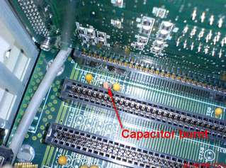

Service History
Subject: NS-6040 Controller(SRC520) unable to boot up
Handler Model: NS-6040 (UTAC, S/N: 15633 (NS60-19T)) Mfg: Nov 2000
Controller: SRC520(S/N: 01878)
Date: 1 Feb 2008
Symptom
NS60-19T Controller unable to boot up.
Action
Found out SRC520 motherboard's(backplane board) capacitor burnt. Advise Customer to purchase new part.
SRC520 backplane specification: MBP-PC114R (R35N600000100).
Supplier has been changed recently and the board size has also changed from previous type.
Recommend to measure the board size before receiving PO.

Cause
Motherboard's(backplane board) capacitor burnt.
Remarks
EPSON reconfirmed motherboard (backplane) size to supplier and noticed that the new board size will suit to the machine controller ( S/N: 15633) without any problems, so it is not necessary to confirm its size from your side. EPSON also informed that the motherboard's name/ spec have been changed as follows.
Old type Backplane
specification: MBP-PC114R (R35N600000100)
another old type Backplane is SRC520CE is MBP-PCI13L
New type Backplane
Spec:PCI-14S-RS-R30
Lastest Backplane is MB-PCI14/9(PC) which is also use in NS-7000.